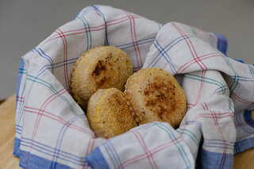

English Muffins
English Muffins sind ein beliebtes Gebäck in den USA, die, wie der Name bereits verrät, ihren Ursprung in der UK haben. Dort werden sie einfach Muffins genannt. Es handelt sich um ein kleines, rundes Gebäck, das oftmals in der Pfanne ausgebacken wird und aufgeschnitten mit Belägen wie Butter und Ei serviert wird. Das machen wir natürlich nicht, denn uns schmecken die English Muffins mit Marmelade am besten. Das beste an English Muffins ist, dass sie sich wunderbar einfrieren lassen und portionsweise knusprig aufgebacken eine leckere Zwischenmahlzeit sein können. Das Rezept ist sehr einfach gehalten und leicht in den Alltag integrierbar - kein Vorteig oder Dehnen und Falten notwendig! Man braucht lediglich einen aktiven Sauerteig.
Hauptteig
- 110 g aktives Anstellgut/Roggensauerteig
- 420 g helles Weizenmehl oder Dinkelmehl
- 10 g Salz
- 50 g pflanzliche Milch
- 150-170 g Wasser
- 25 g Margarine
24 Stunden vor dem geplanten Verzehr
Alle Zutaten bis auf die Margarine in einer Küchenmaschine oder von Hand vermischen, bis ein zusammenhängender Teig entsteht. Bei Bedarf noch etwas Wasser hinzufügen. Der Teig sollte nicht zu fest sein, aber auch nicht zu weich.
Die Margarine dazugeben und 5-7 Minuten kneten.
Den Teig in der Schüssel abgedeckt 1-2 Stunden bei Raumtemperatur, dann 12 Stunden im Kühlschrank aufgehen lassen.
Den Teig auf eine leicht bemehlte Arbeitsfläche geben und ohne den Teig zu kneten mit bemehlten Händen flach drücken.
Mit einem Ausrollstab auf 2 cm Dicke auswellen.
Mit einem runden Ausstecher oder einem Glas (Durchmesser etwa 8 cm) Kreise ausstechen und auf ein mit (Mais-) Grieß bestreutes Backblech legen.
Auf diese Weise den gesamten Teig verarbeiten. Dabei darauf achten, die Reste nur leicht zusammenzudrücken und nicht sehr zu kneten, da das das Ausrollen erschwert. Das Rezept ergibt etwa 10-12 Muffins.
Den Teig eventuell leicht befeuchten und auch die Oberfläche mit Griess bestreuen. Die Teiglinge abgedeckt eine Stunde bei Raumtemperatur, dann 8-12 Stunden im Kühlschrank gehen lassen.
Nach der kalten Gare eine (Guss-)Eisenpfanne auf mittelhoher Hitze und den Ofen auf 200 Grad aufheizen.
Nun die English Muffins nacheinander in der Pfanne ausbacken. Dazu die Teiglinge vorsichtig mit etwas Abstand in die Pfanne legen (in eine Pfanne mit 26 cm Durchmesser passen 4 Muffins) und ungestört 5 Minuten von der einen Seite backen, dann vorsichtig wenden und 5 Minuten von der anderen Seite backen.
Wenn beiden Seiten schön (dunkel-)braun sind, aber die Muffins sich noch etwas roh anfühlen (das erkennt man auch an einem rohen Teigring an der Seite), die Muffins zum fertigbacken etwa 5 Minuten in den Ofen legen.
Noch warm servieren 😍.